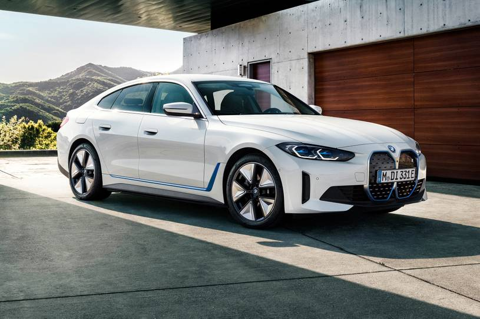
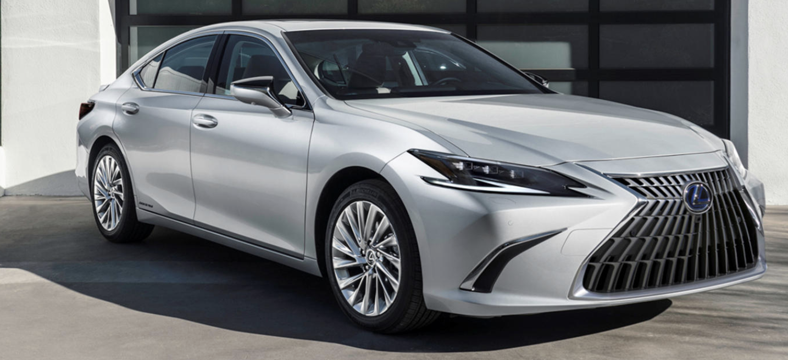
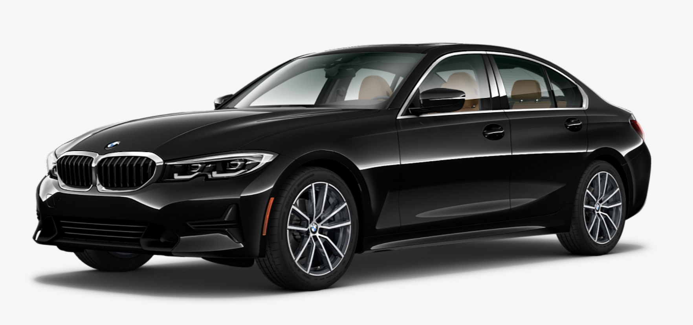
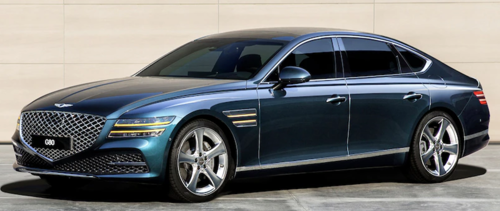
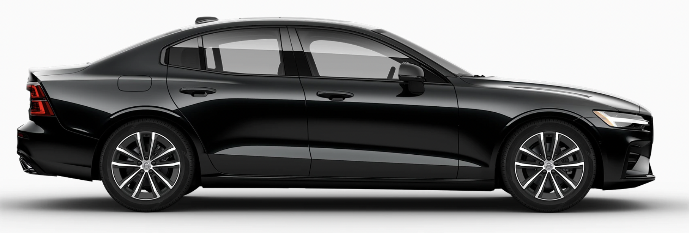
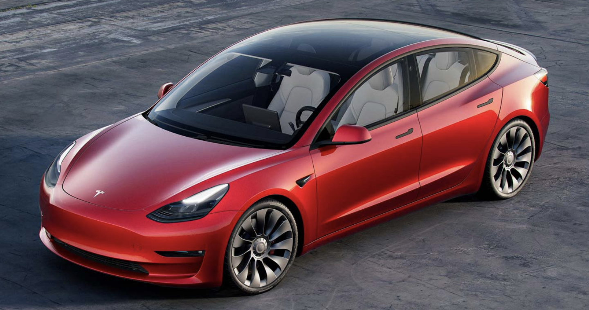
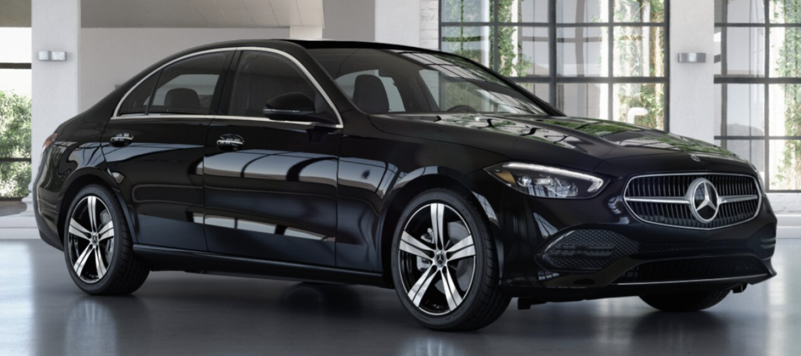

My Journey of Choosing a Car
When I was doing my masters, my favorite routine was waking up every day, getting my morning coffee and customizing cars by playing around with all the options. From a Nissan Versa to a Bentley Bentayga, I probably covered every car that was ever brought into the US in the past decade. In July 2021, I got a summer internship and what was the first thing I did? I bought a car! I had a choice back then, a Lexus or a Honda Civic. I chose a Lexus and thus began my journey with Luxury cars. I believe that the time has come for me to buy my second car. And there are quite a few choices for my price range.
If you know me, you know that I love two things the most. Long-winded articles and a passion for cars. Today, I'm going to present you both. First, I'm going to give you a detailed description of what I felt when I test drove the cars. And then I'll rate all the cars on a few factors. I will then rate those factors based on how important each one is for me. I know it sounds a bit convoluted, but you'll get the gist of it by the end. So, let's get rolling!
1. BMW i4 M50
Pros:
- The acceleration is nuts. My heart wasn't ready for this. Although it did feel a little jerky, The electric motor does not hold back when called upon.
- Long range. For an EV with performance in mind, 300+ miles of range is pretty impressive. The heads-up display with a map is cool. Also, the panoramic screen is good.
- Beautiful exterior. This was what drew me to this car in the first place. The front of the car looks so cool.
- Constrained seats and seating position. Feels like you are crouching while driving. Head hits the roof if you sit upright in the back seats.
- Small boot. Small rear window. Small everything inside except the screen. And the wireless charger didn't work. Quite lame for an EV test drive.
- Trash suspension. I put comfort mode on but that seemed to do nothing. I understand that with superior handling comes a bumpy ride but that doesn't mean I have to jump out of my seat hitting every bump in Boston.
2. Lexus ES350 Ultra Luxury
Pros:
- Amazing suspension. I test drove a USED ES. Which has 20k miles on it. And it drove so smooth. I intentionally drove it through a bumpy road and the only thing that jerked was the tires.
- Seats, seating room and seating position. Just perfect. Insane room for rear passengers and overall a great car to travel long distances in. The car is just big overall. It’s a good 9-12 inches longer than similar priced luxury cars and the roominess is evident in the cabin.
- The silence during the ride is exceptional. None of the road noise flows into the cabin and that makes for a pleasant ride.
- Default infotainment UX looks old. Did they not change the map UI since 2010? I expected the mouse pad thing to be hideous, but it’s actually ok. It’s just a waste of space though.
- Anyway, you’ll use Apple CarPlay most of the time. And that isn’t wireless. You need to plug your phone in. There is a wireless charger though. I guess that's not meant for the driver. Lexus clearly haven’t put much thought into this.
- Most simple options like heads up display, panoramic sunroof can’t be added to the base model. Which means, you need to get the ultra luxury to top your model out with all the features. It’s not a bad thing because it contains awesome features but it does set you back by $8000 more.
A car worth shortlisting. Should definitely be in my final choices. Lexus does all the car things right. A car is meant for travel and this car makes the travel as comfortable as possible. And luxury in my opinion includes not worrying about a car. Lexus is reputed for that. It screws up gimmicks though. Tbh, you will get used to a useless mouse-pad or your phone being plugged in. But you won’t get used to stiff suspension or a crouched driving position. Which makes this car a great choice overall.
3. Bmw 330i (Drove both, one with dynamic handling and one without)
Pros:
- Amazing handling. The steering doesn't wobble a millimeter. The car goes exactly where you want it to go. The entire driving experience is brilliant. You always feel like you're in control and the car behaves as high speeds exactly as it would at low speeds.
- Seats are pretty comfortable. Engine noise is nearly zero which is a huge plus considering the performance. The car flies, and you barely hear anything in the process.
- The controls are all straightforward. There are buttons where you want them to be, and you can control some of the features from the touch screen as well. And one cool thing is, the car informs you of all warnings with some context. Eg: "Tire pressure is low, you can keep driving at X mph. Be safe while braking" The transmission rod is intuitive and smooth.
- Suspension. With great control comes trash suspension. As agile as the M tuned vehicle feels, it's pure trash for city driving. Bumpy roads of boston will be unforgiving. The regular 330i feels a lot better with the comfort mode on but still not the smoothest vehicle to drive.
- Regenerative braking feels jerky. I understand that it's necessary for mild hybrids to deliver performance, but I'm not sure if so much jerkiness is needed to recharge the battery. While we're on the topic of batteries, why doesn't the wireless phone charger work? I've driven 3 BMWs, all of them nearly new. There is a huge wireless charger icon in the phone slot, but it never works.
- There is lane keep assist, but it feels rather aggressive. Sometimes when you're merging lanes, the lane lines slowly disappear but the car still thinks there's two lanes. If you try to move to the center, it'll aggressively push you back to the corner.
This was a bit of a surprise. Considering the i4 had a terrible review from me, I expected the 330i to do just as worse. But it didn't disappoint as much. Might or might not make it to the final shortlist depending on the ratings I'm going to give it at the end.
4. Genesis G80
Pros:
- Luxury interior. Best in class bar none. Everything is perfectly placed, soft and beautiful. It's the most luxurious seat I've sat in during all these test drives. The doors are power closing, and they feel so smooth. Everything in this car feels smooth.
- Tech. They packed in as much as they could in there. 360 degree cameras seem standard in all vehicles but this car has plenty of standard tech. Like auto-parking, automatic steering out of a parking space, remote control to move the car back and forth
- Lack of performance. Engine moans if you rev it up. And with so much sound, the amount of power is not impressive. Feels like an elephant on wheels. I think that could be attributed to the fact that it's a good 500+ pounds heavier than the Lexus.
- And it's also not as silent as you might expect. The roar of the engine is loud from inside the cabin. The salesperson asked me to rev the engine during the test drive, and it seemed like even he was disappointed at the end. It was loud and the pickup was slow. He felt the need to mention that this is a low performance model.
This already costs $62000. Adding 10k for a more powerful engine isn't even an option. The car is no doubt the most luxurious one among the options. But for being the most expensive car on the list, the performance is just disappointing. I feel like that is going to be a deal-breaker in the end.
5. Volvo S60
Pros:
- A lot of tech is included. So additional expense is low. Although the infotainment system itself didn't really feel the best.
- Steering is smooth. You'll notice it immediately while driving out of the parking lot.
- Doesn't feel luxurious. The leather feels basic. No ventilated seats. I later sat in the S90 which is a lot more expensive and the difference in seats was evident. The S90 is just a highly superior vehicle and the S60 is just at an awkward price point. If you're going to get so much value from an S90 for about $10000 more, I recommend you just bite the bullet and spend the extra money if you can afford it
- Small car. Hard to fit in three people in the back. Rear leg room is pretty bad too. And that is evident from the moment you sit in it. This does not feel like a luxury car inside and Volvo doesn't even do a good job of concealing that fact.
What do I remember from the Volvo test drive? Almost nothing. That speaks volumes about this car. It offers nothing memorable and for so much money, you don't want a forgettable car. It's a car that drives is all I can describe it as. I'm not looking for average in all criteria so won't bother with this one. Will I try the S90 later? I don't know. At a price of $61000, it might be just out of budget.
6. Tesla Model 3
Pros:
- Obviously the noise or lack thereof. There is no sound, no engine vibration, none of that shit. And that feels excellent in-cabin. Suspension was fine. No complaints there.
- Responsive screen. Both a pro and con tbh. Sad that you need to do everything on the screen. But the screen itself is brilliant so you "might" get used to it.
- The acceleration is so rapid and so smooth. You'll touch 60 before you notice, and it isn't as jerky as the BMW i4 M50. Makes for a good overtaking experience.
- Everything else apart from the touch screen feels cheap. Seats, cheap. Center console, cheap. Rear seats and center console, cheap. Doors and the way they close, cheap.
- The full self-driving is a joke. Got honked at twice in 5 mins in Boston. It didn't even recognize the lane in the streets. Beeped like hell twice because it thought I was crashing. Highway seemed fine though most cars do it. Is it worth the $12000 extra? Hell no.
- I don't buy into the full glass roof. Is it good in the evening, yes. Will it be good to have sun in your face with no choice to block it off in long journeys, I don't know.
This car is polarizing. On one hand, you appreciate it so much for all the novel features and looks. The range, fuel savings, environmental friendliness are all awesome. But when you're spending 60k on a car, cheap interiors aren't what you're looking for. Are the pros enough to outweigh the cons? I guess we'll find out when the final ratings are out.
7. Mercedes Benz C class
Pros:
- As soon as you start this car, the first thing you'll notice is the control. The vehicle drives steady and is perfectly responsive to steering.
- The acceleration feels powerful. For a 4-cylinder engine, this car runs like a beast and at the same time, you feel like you're in full control of the wheel.
- The giant infotainment system and the ambient lighting. It's going to be awesome for sure. Separates it from other gas cars. Gives you the S class feel.
- The car is small. Rear passengers will suffocate if a tall driver or front passenger is sitting. This honestly might be a deal-breaker in itself.
- The cabin noise. You would expect a Mercedes to be quiet. You should've seen the disappointment on my face everytime the engine was roaring into the cabin. My feet on the throttle were vibrating with the noise. And that happens only with cheaply built cars. Even at a traffic light, you could hear the engine. Another deal-breaker.
I wanted to save the best for the last but this is far from the best. It's not even average if I'm going to be honest. It's another polarizing car. Except this time, the negatives far outweigh the positives. I don't expect it to be anywhere near the top in the final rankings. I really wanted to love this car, but it just fell so short.
Time for some ratings
So now that we have a rough idea of how each car felt like during a test drive, it's time to quantify the feel. I listed out ten criteria that I rated the cars upon.- Suspension: How the car feels on bumpy roads.
- Handling: How the car responds to steering input and control while cornering.
- Ride smoothness: Does the acceleration feel jerky? Is the regenerative braking too much?
- Acceleration: How fast the car picks up speed.
- Cabin space: How spacious the seats are. Both in the front and back row.
- In cabin noise: How much noise from the road and engine penetrates the cabin.
- Seat comfort: How comfortable are the seats to sit in and adjust. Are they heated/ventilated?
- Luxury: A subjective opinion on how luxurious the car feels.
- Infotainment: Pretty self-explanatory.
- Maintainability: How expensive the car is to maintain in the long term? How many visits to the mechanic does it need?
Now that we have all of that out of the way, here are the final ratings:
In terms of weighted average, the Lexus reigns supreme. Now this was something that I expected to happen. If you have ever driven a Lexus, you would appreciate the quietness of the cabin, the smoothness of the ride and just pure comfort when you ride. This might be classified as boring by some people but personally for me, those are the main factors that make a car luxurious. Additionally, if a car is at a mechanic more often than not, the luxury is pretty pointless.
Tesla coming in second is what I did not foresee. I thought the gimmicky feel of the infotainment system will put me off and that the sudden acceleration isn't something that makes a ride smooth. But I have to admit I was wrong. It does plenty of basic things right and has a factor of environment-friendliness to it which makes it a strong contender.
After driving the BMW i4, I expected the BMW 330i to also disappoint me. But I was wrong on many levels. The BMW is a great combination of luxury and driving experience. It isn't perfect in terms of luxury but it's a damn near perfect driving machine. Even taking a right turn at a stop sign feels interesting because of the responsiveness of the steering and how agile the vehicle feels.
Now, a main negative I mentioned while reviewing the Lexus and Tesla is the fact that they don't come cheap. To incorporate this pricing into our rating, I computed two simple metrics:
- Rating points per $10000
- Cost per rating point
Now this led to a surprising result. The BMW rises up the ranks and takes the top spot ahead of both the Lexus and Tesla. Considering that it is nearly $12000 cheaper than the Tesla, the pricing makes for an interesting dilemma. So now, it all boils down to three choices. The Lexus if I want the best car that my money can buy today. Tesla if I'm looking to be a little environmentally conscious in addition to having most things I need. BMW if I want to get a great driving experience and excellent value. Not an easy choice to make. I guess I need some time to decide and maybe that calls for a totally different post.